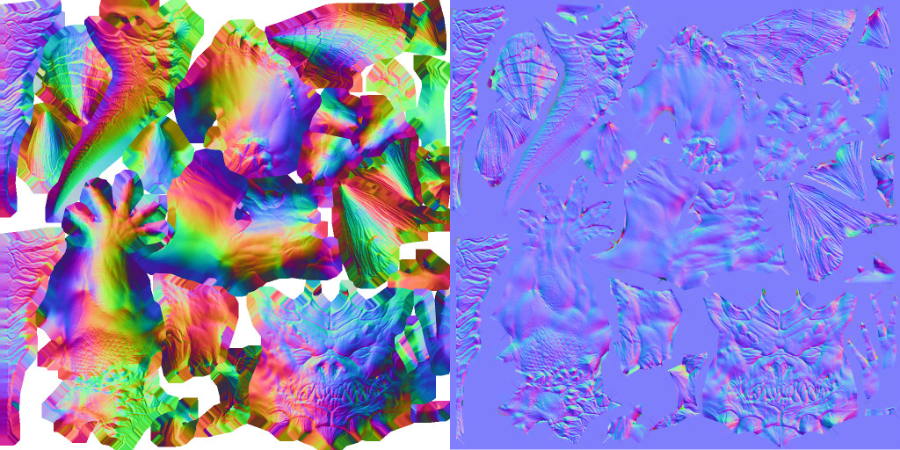
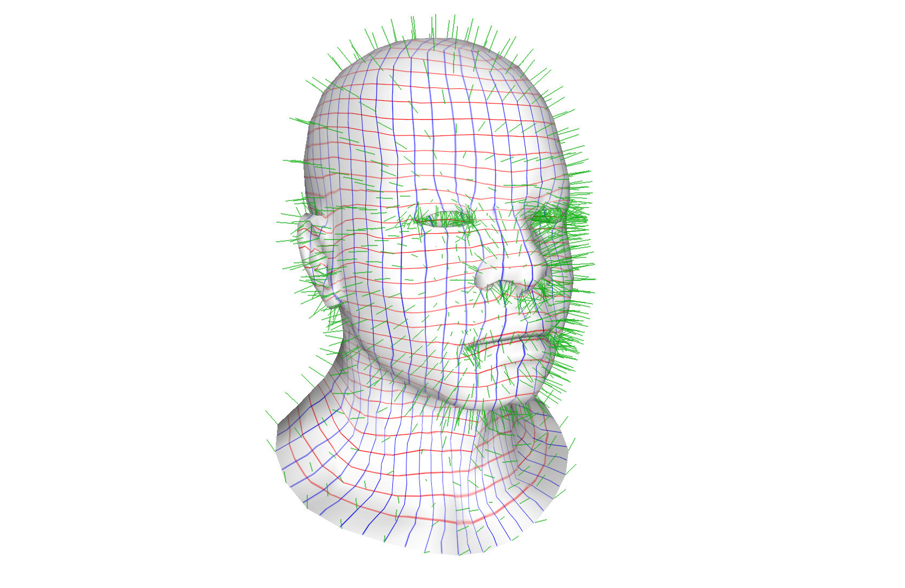
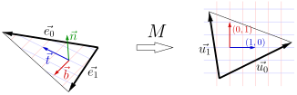

Tangent space normal mapping
Global vs. tangent space
Let us talk more about normal mapping. It is a technique in computer graphics where a texture (the normal map) stores per-pixel normals, allowing fine surface detail to be simulated without increasing mesh complexity.
Previously, we used files with the _nm.tga suffix, whereas the repository also contains textures with the _nm_tangent.tga suffix.
The first one is a global-space normal map, while the latter is a tangent-space normal map.
Here they are side by side for the Diablo model:

Last time we used the texture on the left, where each RGB value directly encodes a world-space normal. There is a problem, though: if an artist reuses UVs (rotates, mirrors, or overlaps the flattened mesh so that multiple surface parts have the same texels), then different 3D patches will generally require different global normals at the same texel. One color cannot represent “two different directions at once,” so the result is wrong unless you forbid overlaps/rotations and enforce a unique, non-mirrored UV unwrap — very restrictive and memory-hungry.
This problem arises in the Diablo model. For example, its arms, legs, and even both halves of the tail are superposed in the texture map. Here is an illustration:
{kind=link}
Check the left image: the light comes from the right, so the right side of Diablo's hip is badly shaded — something we need to fix. The solution is to use the tangent-space normal map. Here, each texel encodes a normal relative to the local basis that moves along the surface.
To illustrate what I mean by the local basis, I mapped a regular grid to the model:

In addition, I have drawn smooth normals in green. At each point of the surface, we can define a local, per-fragment basis made of the tangent, bitangent, and normal vectors (aligned with the red, blue, and green lines of the grid). Because normals stored in tangent-space textures are relative to this moving frame, the same texel works correctly even for superposed or mirrored patches.
In short, global-space normal maps tie each texel to a single fixed direction, which breaks when UVs are reused. Tangent-space normal maps are expressed in a local frame that follows the surface, so the same texture region can drive multiple differently oriented surface parts correctly.
Here's a quick question for you: why are tangent-space normal textures dominantly blue?
Spoiler Alert!
Imagine a normal map for a perfect sphere.
- In global space, normals span every possible orientation, so the texture looks like a rainbow of directions.
- In tangent space, however, the normal is always the same vector \((0,0,1)\), which corresponds to a bluish color. The variation in shading comes from the moving local basis, not from the texel colors themselves.
Computing the tangent frame
As we saw, for each fragment we need to compute a basis whose tangent and bitangent vectors are aligned with the red and blue lines of the UV grid. Consider a triangle with 3D vertices \(P_0, P_1, P_2\) in global space and corresponding 2D UV coordinates \(U_0, U_1, U_2\).
Define the edge vectors:
Then the UV mapping can be described by a \(2 \times 3\) matrix \(M\):
Here is an illustration:

Let us call the \(3\times 2\) matrix \(E\) and the \(2\times 2\) matrix \(U\):
So we have \(M \times E = U\). We want to find the tangent vector \(\vec{t}\) and the bitangent vector \(\vec{b}\) such that they map to the unit UV axes:
Or, equivalently, \(M \times \begin{pmatrix}\vec t & \vec b\end{pmatrix} = \begin{pmatrix}1 & 0 \\ 0 & 1 \end{pmatrix}\). Recall that \(M\times E = U\), therefore, \(M\times E \times U^{-1} = \begin{pmatrix}1 & 0 \\ 0 & 1 \end{pmatrix}\).
From this, we conclude:
Finally, add the interpolated normal \(\vec{n}\), and you have constructed the full tangent-space basis \(\begin{pmatrix}\vec t & \vec b & \vec n\end{pmatrix}\).
Homework
Implement tangent-space normal mapping. As usual, I provide my code for reference.
Next time we will talk about global illumination.